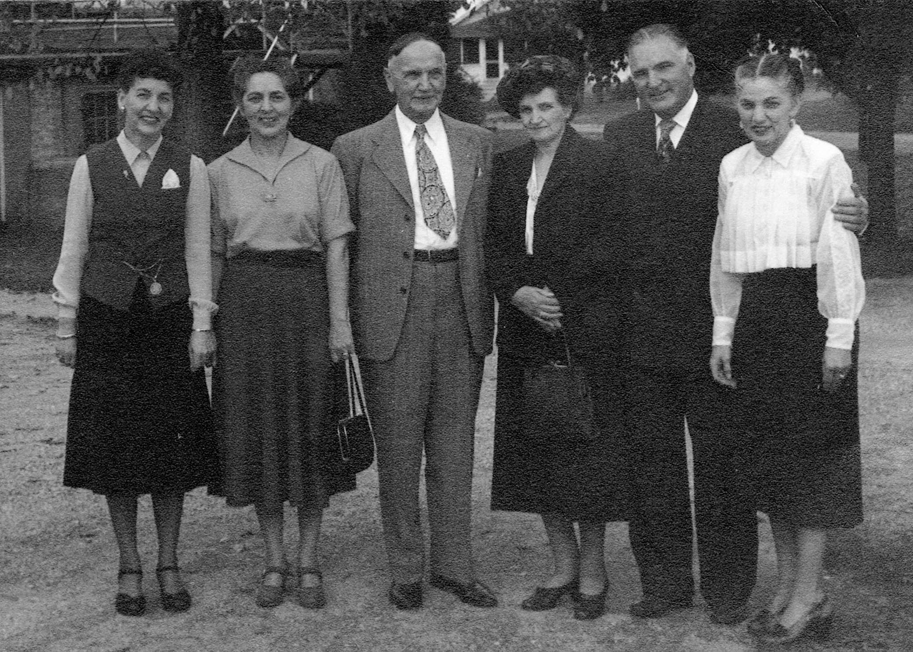

Here's a photograph of Alfred and his children taken ca. 1950. The participants in this photograph are, left to right: Anne nee WYSS RUDGE, Esther nee WYSS BURRIDGE, Alfred WYSS, Olive nee WYSS BRACKER, Leo WYSS, and Milda nee WYSS MILLER.